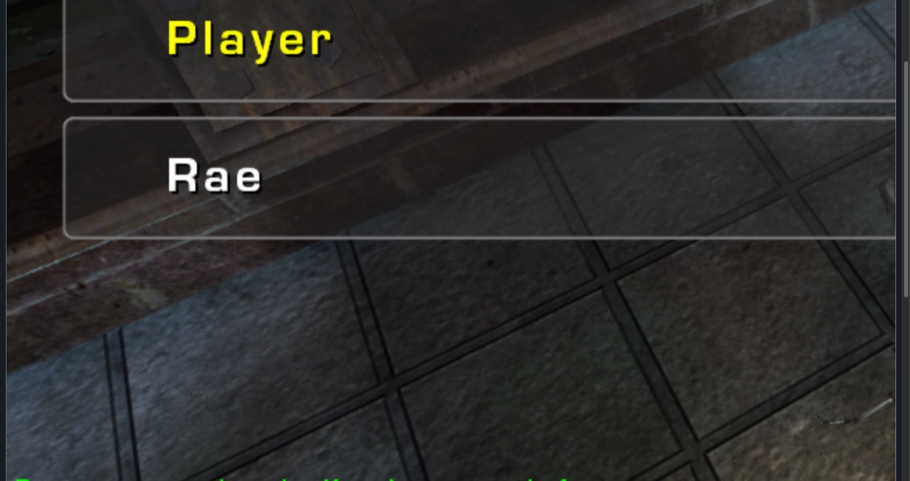

FULL GAME / WEBASSEMBLY
Unreal
Tournament 2004
Play your full installation in the browser, with the original maps, bots and Monkey Matrix Moves.

Set up the full game
The game starts automatically when your stream is available. For a local installation, choose the client archive and game folder once.
Download the v0.2.0 web client ↗Get UT2004 from OldUnreal ↗Install the tested game build ↗
Monkey Matrix Moves
Double jump at any point in flight. Hold crouch to hover, dodge toward a wall to run along it, or press B to spend adrenaline on bullet time. This loads the authors’ UT2004 package from Unreal Archive.
Read the mutator history →Movement arena
Try an independent recreation of the moves with a small WASM download. Includes touch controls and four roaming targets.
Enter movement arena →